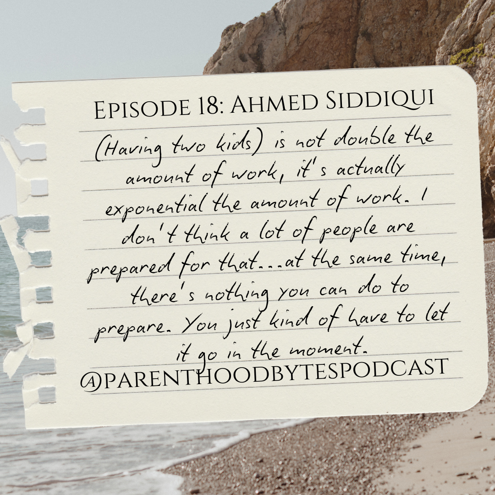

latest episodes and show notes

Episode 52: Mallika Rao
Mallika Rao is an Engineering Manager at Netflix and based in the Bay Area. She has two kids - ages 3 and 5 months.
Episode 51: Rayman Wong
Rayman is a Software Engineering Manager in Southern California and has an 8-year-old son.Episode 50: Chiao w/Special Guest Hosts
In this episode, Chiao is interviewed by three guest hosts - her sons, Darian, Xander, and Lucas.Episode 49: Michael
Michael is a security professional, specializing in protecting tech companies. He has two kids, ages 12 and 10.
Episode 48: Len Scalero
Len is a Senior Manager at Walmart Connect. He has three kids - ages 27, 24, and 21.Episode 47: Julie Hollek & Max Lee - Panel: Parental Leave
This is a panel discussion with Julie Hollek and Max Lee, talking about our approaches with work on parental leave and potty training our kids.
Episode 46: Darian
Darian is a 14-year-old kid in high school, with two younger siblings and parents in tech.Episode 45: Andrew Tio - Update
Andrew Tio is a Senior Software Engineer in the Bay Area. He has two kids, ages 7 months old and 2 years old. This is an update since the last time we talked to him on episode 19.
Episode 44: Max Lee
Max Lee is a Senior Software Engineer in the Bay Area. He has two kids, ages 4 and 6.
Episode 43: Erin Eng
Erin Eng is a Product Designer in the Bay Area. She has two kids, ages 13 and 3 .Episode 42: Tali Gutman
Tali Gutman is a Staff Software Engineer at Datadog, in Colorado. She has two kids, ages 2 and 4.Episode 41: Leonardo Garcia Crespo
Leonardo Garcia Crespo is a Software Engineer at Automattic based in London. He has two kids - ages 7 and 2.5
Episode 40: James Williams Jr
James Williams Jr is a principle product manager at Walmart, currently based in Las Vegas. He has three kids, ages 32, 26, and 24.
Episode 39: Monique van den Berg
Monique van den Berg is the Head of Online Community & Community Management at Atlassian in the Bay Area. She has a 13-year-old daughter.
Episode 38: Chris Guillory
Chris Guillory is a Project Manager at Modo Health. He has two sons, ages 18 and 13.Episode 37: Rahul Deshmukh
Rahul Deshmukh is a seasoned marketing executive in the bay area, with two kids, ages 20 and 16.
Episode 36: Dave White
Dave White was formerly the Head of Product Operations and is currently an Operator and Investor as well as an advisor in Product Management in the Bay Area. He has two children, ages 20 and 22.Episode 35: Ebenezer Anjorin
Ebenezer Anjorin is a Product Manager at Google. He has two kids, one turning 3 and another one on the way (as of the recording).
Episode 34: David Spark
David Spark is a co-host, producer, and managing editor living in Southern California. He has two kids, ages 10 and 13.
Episode 33: Vera Mehta
Vera Mehta is a Senior Director of Software Engineering in the UK and has a 14-month-old son.
Episode 32: Berkley Hinton
Berkley Hinton is a Product Manager in the Bay Area, who has a 9 year old, 13 year old, and 22 year old. He is also the author of Burning World.
Episode 31: Mike Cvet
Mike Cvet is a Distinguished Engineer in the Bay Area. He has five kids, ages 11, 9, 7 and 4 (twins).Episode 30: Mallika Rao
Mallika Rao is an Engineering Manager at Netflix, living in the Bay Area. She has a 20 month old son and a newborn (as of now).
Episode 29: Can Envarli
Can Envarli is the VP of Engineering at Liquidity Book. He has 10-year-old twins and resides in Washington.Episode 28: Vicky Fang
Vicky Fang was a staff designer at Google and is currently a children's book author and illustrator. She currently lives in the Bay Area and has two kids, ages 8 and 10.
Episode 27: Tameez Sunderji
Tameez is a Product Manager living in the Bay Area. He has a 10-year-old daughter.
Episode 26: Mei
Mei is a data scientist in Singapore. She has two kids, age 3.5 years old and 4 months old.Episode 25: Susan Lee Neth
Susan Lee Neth is a Software Engineer in the Bay Area. She has three kids, who are 18, 16 and 14.
Episode 24: David Anderson
David Anderson is a UI Developer and filmmaker in the Bay Area. He has three adult children, ages 32, 28, and 26.
Episode 23: Karthik Sethuramen
Karthik Sethuramen is a Staff Engineer in the Bay Area with a 3.5 year old son.
Episode 22: Erin McKean
Erin McKean is the founder of wordnik.com and works in the open source office at Google. She has a 24-year-old son.Episode 21: Anna Sulkina
Anna Sulkina is a Director of Engineering at Airbnb. She has twin girls who are now 16 (but were 15 at the time of the recording).Episode 20: Lauren Fischetti
Lauren Fischetti is a former director at Affirm turned career and life coach in the Bay Area. She has two young children of the ages 3 and 1.5.Episode 19: Andrew Tio
Andrew is a Staff Frontend Engineer at Proper and a devoted father of two young girls, ages 3 and a newborn.

Episode 18: Ahmed Siddiqui
Ahmed is the author of Anatomy of the Swipe, instructor for Academy of the Swipe and a product leader at Branch. He has three children ages 10, 8 and 4.Episode 17: Emily Price
Emily is a Staff Technical Product Manager at Singularity 6 and a mother of two young children, ages 5 and 2.
Episode 16: Omar McNeil
Omar is a Staff L&D Program Manager at Github based in North Carolina. He is the father of two kids, ages 10 and 7.
Episode 14: Hita Gambheer
Hita is a Staff Software Engineer at Marqeta, currently residing in the Bay Area. She has 6 year old twins and a 1.5 year old baby.
Episode 13: Aaron Hans
Aaron is a Senior Software Engineer in the Bay Area and has two children, aged 12 and 9.
Episode 12: Jon Koon
Jon is an Engineering Leader at Hubspot. He is currently living in Atlanta, Georgia and has three children aged 12, 10, and 8.
Episode 11: Bernadette Castanada
Bernadette is a Director of Risk in the Bay Area and has a 24 year old son.
Episode 10: Adam Cando
Adam is a Software Engineering Manager at Loyal. He talks about his experiences raising his 4 year old daughter.
Episode 9: Pedro Rico
Pedro is is currently a Staff Software Engineer, raising a 6 year old son.
Episode 8: Ingrid Yen
Ingrid is a Staff Technical Program Manager at Github. She shares her insights and experiences raising two kids, ages 6 and 12.
Episode 7: Will Ramirez
Will is a Senior Software Engineer at Mongo DB, currently residing in Florida. Will shares his experiences of raising a 6-year-old and a 17-year-old.
Episode 6: Mahima
Mahima is an Engineering Manager currently living in New York. She has a 1.5 year old son.
Episode 5: Song
Song is the VP of Technical Services at Nium, currently residing in the Bay Area. He has a 17 year old son.
Episode 4: Bobby
Bobby is a Senior Project Manager at Amazon, currently based in Texas. He has two kids, aged 12 and 10.
Episode 3: Julie Hollek
Julie Hollek is the Director of Data Science at Mozilla, currently based in Texas. She has two children, aged 11 and 17 months old.
Episode 2: Abdul
Abdul is an IT manager in Ireland, who juggles a demanding career at a large tech company while parenting two little ones, aged 4 and 2.